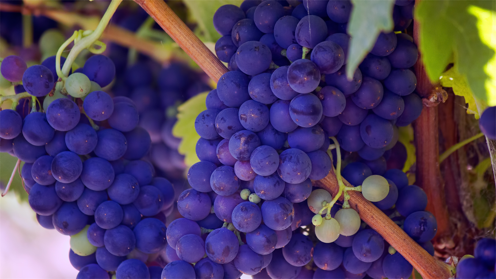
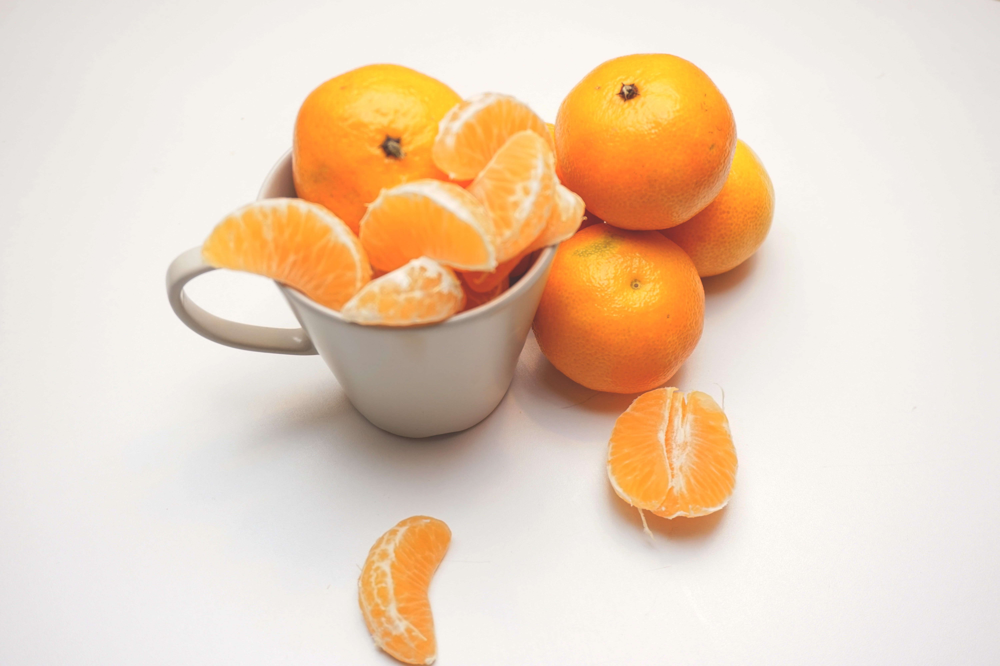

-
Fruit
In botany, a fruit is a part of a flowering plant that derives from specific tissues of the flower, one or more ovaries, and in some cases accessory tissues.
Fruits are the means by which these plants disseminate seeds. Many of them that bear edible fruits, in particular, have propagated with the movements of humans and animals in a symbiotic relationship as a means for seed dispersal and nutrition, respectively; in fact, humans and many animals have become dependent on fruits as a source of food.
>> -
Grapes
A grape is a fruiting berry of the deciduous woody vines of the botanical genus Vitis.
Grapes can be eaten raw or they can be used for making wine, jam, juice, jelly, grape seed extract, raisins, vinegar, and grape seed oil. Grapes are a non-climacteric type of fruit, generally occurring in clusters.
<< >> -
Oranges
Juicy and sweet and renowned for its concentration of vitamin C, oranges make the perfect snack and add a special tang to many recipes; it is no wonder that they are one of the most popular fruits in the world. Oranges are generally available from winter through summer with seasonal variations depending on the variety.
Oranges are round citrus fruits with finely-textured skins that are, of course, orange in color just like their pulpy flesh; the skin can vary in thickness from very thin to very thick. Oranges usually range from approximately two to three inches in diameter.
<< >> -
Cantaloupe
Cantaloupes and other summer melons serve as the quintessential take-along snack for summer picnics and barbeques. Their high water content helps ward off dehydration and combat the heat while their refreshing taste provides a guilt-free, low maintenance dessert for kids and adults alike. The mildly sweet and juicy flavor of cantaloupe makes it a perfect fruit for even the pickiest palates.
Cantaloupes are also commonly known as muskmelons, mush melons, rock melons and Persian melons.
<< >> -  << >>
-  << >>
Here I am
<< >>